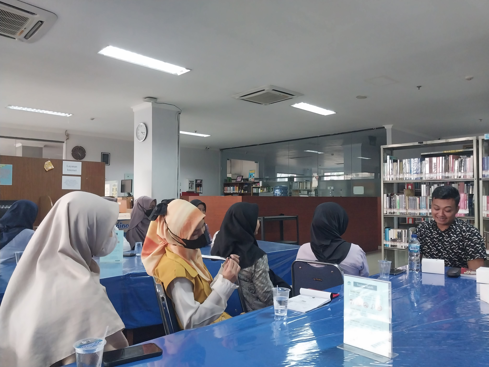
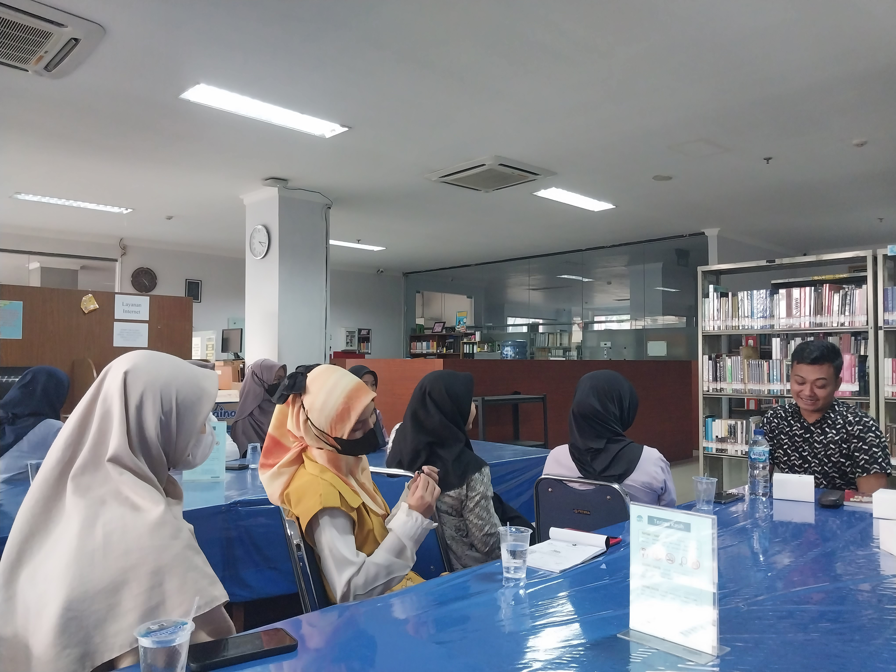
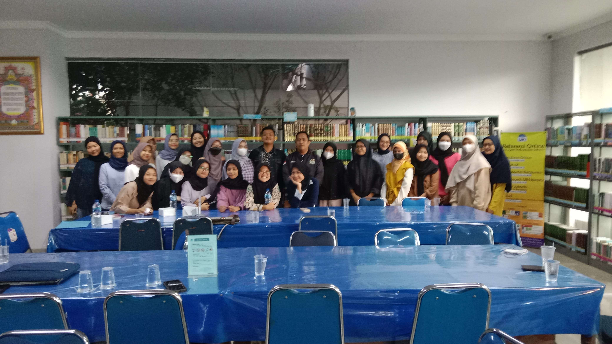
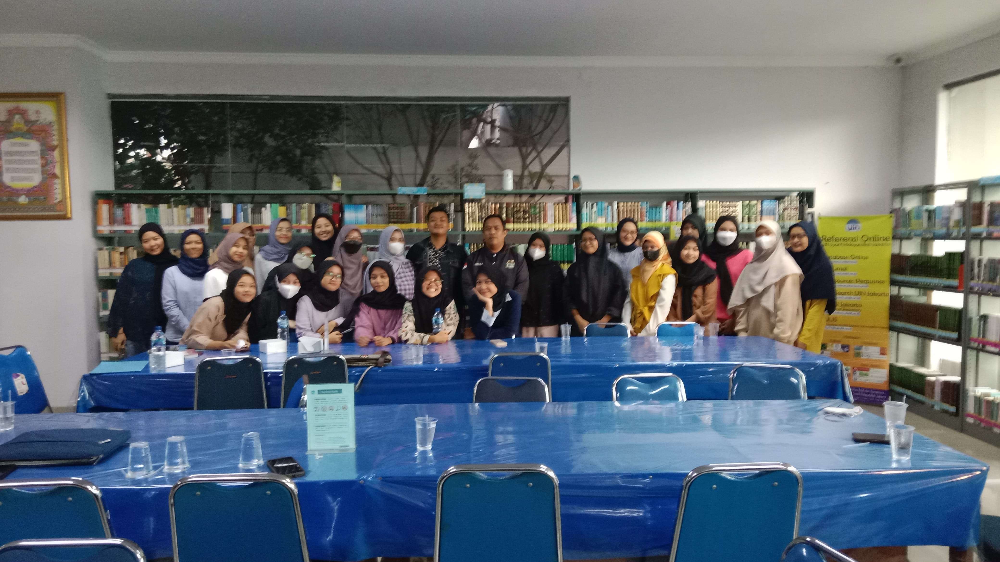

Menyusuri Ruang Ilmu dan Keterampilan Administratif
Bedah Perpustakaan
Eksplorasi Kekayaan Ilmu
Kegiatan dimulai dengan sesi "Bedah Perpustakaan", yang bertujuan
untuk memberikan pemahaman mendalam mengenai peran PUSTIKUM di perpustakaan
FAH dan juga mempererat ikatan masyarakat PUSTIKUM dengan perpustakaan.
Winda Istati sebagai kepala perpustakaan FAH, dan dilanjutkan oleh Muhammad Azwar S.Pd.I, M.Hum
sebagai salah satu pembina Pustikum, membuka sesi ini dengan membahas
pentingnya rasa tanggung jawab dan bagaimana perpustakaan dapat menjadi
menjadi rumah dari PUSTIKUM yang wajib ditanam dalam diri setiap anggotanya yang berpartisipasi sebagai pustakwan. Muhammad Azwar juga menambahkan dan memberi kesempatan untuk para anggota menyuarakan inovasi yang ingin dan cocok diterapkan di Perpustakaan FAH.
Keterlibatan aktif anggota dalam PUSTIKUM akan menciptakan lingkungan kolaboratif yang mendukung pertukaran ide dan peningkatan
pengetahuan serta perkembangan bagi perpustakaan FAH sebagai wadah sekaligus objek kerja PUSTIKUM.
Pelatihan Administrasi Organisasi
Menguasai Keterampilan Administratif Lembaga Otonom
Sesi kedua acara difokuskan pada "Pelatihan Administrasi Organisasi". Rizal, sebagai pemangku jabatan presiden Dema FAH yang memiliki tanggung jawab pada seluruh lembaga otonom di Fakultas Adab Humaniora, melakukan sosialiasi dan juga membimbing seputar administrasi lembaga otonom kepada masyarakat PUSTIKUM yang merupakan salah satu lembaga otonom baru di Fakultas Adab dan Humaniora. Ia memimpin sesi ini dengan membahas konsep dasar administrasi dan penerapannya dalam konteks organisasi.
Peserta diajak untuk mengasah keterampilan praktis, termasuk penyusunan agenda rapat, pengelolaan keuangan organisasi, dan teknik komunikasi efektif. Dengan pendekatan interaktif, anggota terlibat dalam simulasi situasional yang memungkinkan mereka mengaplikasikan langsung keterampilan yang telah dipelajari.
 

 

Dengan adanya "Bedah Perpustakaan dan Pelatihan Administrasi Organisasi", Pustikum berkomitmen untuk terus memberikan wadah pembelajaran yang inspiratif dan mendukung pengembangan anggota organisasi. Semoga acara ini dapat menjadi pijakan bagi peningkatan kualitas dan efektivitas peran setiap individu dalam mencapai tujuan bersama.
Mari bersama-sama melangkah menuju perpustakaan yang lebih berdaya dan organisasi yang administratif dalam mewujudkan visi dan misi Pustikum.